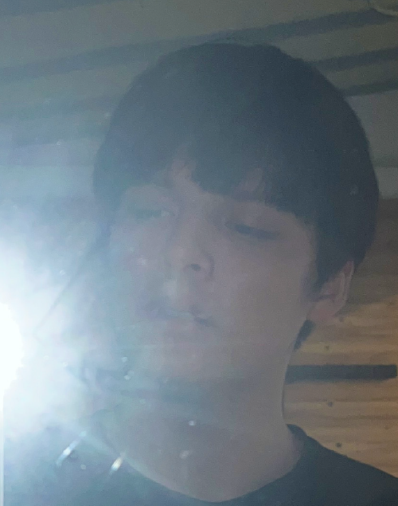

Design / Art / Photograph
秋山 エドガル
静岡県生まれ｡多摩美術大学美術学部統合デザイン学科卒業。
最近はグラフィックデザインをしたり、インテリアとか彫刻を作ったり、写真をや書き物をしたりと、なんだかキメラみたいな風貌で、表現の世界を駆け回っています。
あそびは､創作においてとても大事なもののように思えます。居酒屋のおしぼりを綺麗に畳むとか､遠くの雲をみてぼーっとするのもまたあそび。ささやかなゆとりが、幾重にも凝縮、圧縮され､やがて結晶化し､心をもったものが出現する。ものってそういうもの｡
毎日昼寝ができるくらいの隙間に、集めた宝石とかお菓子とかをぎゅうぎゅうに詰めて､あなたに届けちゃったりする。
Design / Art / Photograph